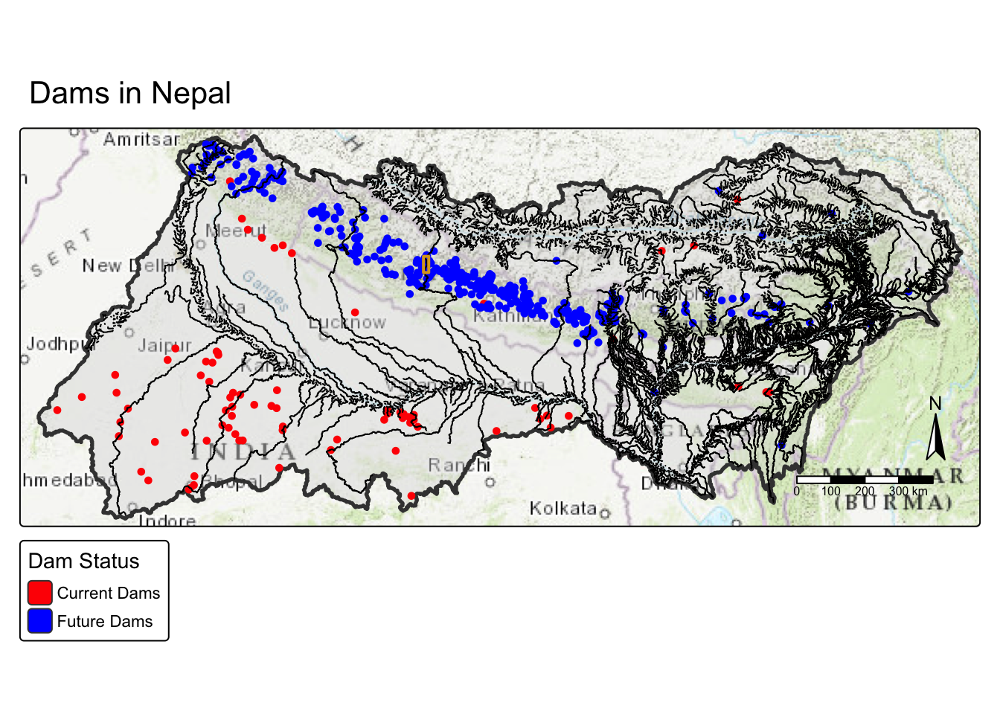
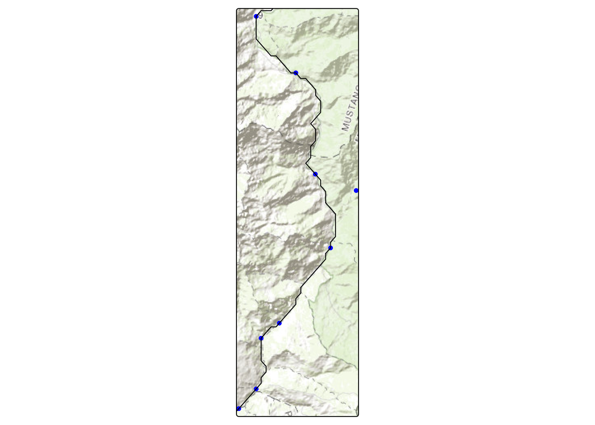
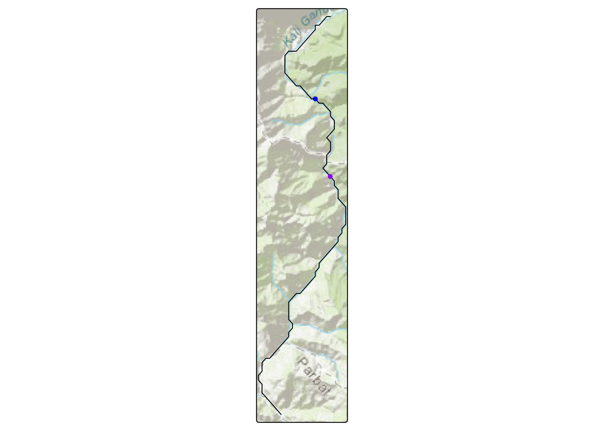
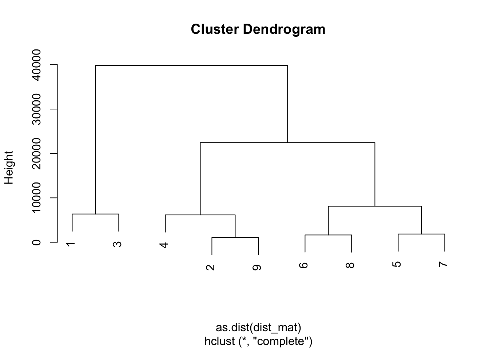
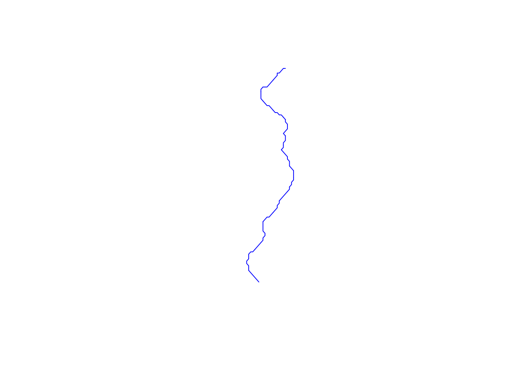

library(tidyverse)
library(janitor)
library(dplyr)
library(tmap)
library(sf)
library(here)
library(stars)
library(spData)
library(terra)point_distance_cleaned
Download data
current_dams <- read_sf(here::here('data', 'GRanD_Version_1_3')) %>%
clean_names()
future_dams <- read_csv(here::here('data', 'FHReD_2015_future_dams', 'FHRed_2015_future_dams_CSV.csv')) %>%
clean_names()
# Water Basin
basin_level3 <- read_sf(here::here('data', 'asia_basin_levels', 'hybas_as_lev03_v1c.shp')) %>%
clean_names()
# Rivers
asia_rivers <- read_sf(here::here('data', 'asia_HydroRIVERS.gdb', 'HydroRIVERS_v10_as.gdb')) %>%
clean_names()Cleaning and Cropping to Nepal
future_dams <- st_as_sf(future_dams,
coords = c('lon_cleaned', 'lat_cleaned'),
crs = st_crs(current_dams))
# Filter water basin to Nepal Level
nepal_basin <- basin_level3 %>%
filter(hybas_id == 4030025450)
# Filter rivers to order 3
asia_rivers3 <- asia_rivers %>%
filter(ord_clas == 3)
# Make geometeries valid
current_dams <- st_make_valid(current_dams)
future_dams <- st_make_valid(future_dams)
nepal_basin <- st_make_valid(nepal_basin)
# Crop dams and rivers to Nepal
nepal_current_dams <- st_intersection(nepal_basin, current_dams)
nepal_future_dams <- st_intersection(nepal_basin, future_dams)
nepal_rivers <- asia_rivers3 %>%
st_filter(y = nepal_basin, .predicate = st_intersects)
rm(list = c('asia_rivers', 'asia_rivers3', 'current_dams', 'future_dams'))Cropping to 1 river with multiple dams on it
# Creating bounding box of 1 river
box_poly <- st_as_sfc(
st_bbox(c(xmin = 83.56, xmax = 83.6987, ymin = 28.328360, ymax = 28.704314),
crs = st_crs(nepal_basin)))
# Check CRS
st_crs(nepal_basin) == st_crs(box_poly)[1] TRUE# Map everything
tm_shape(nepal_basin) +
tm_polygons(fill_alpha = 0.4, lwd = 2.5) +
tm_basemap('Esri.WorldTopoMap') +
tm_shape(nepal_current_dams) +
tm_dots(fill = "red") +
tm_shape(nepal_future_dams) +
tm_dots(fill = "blue") +
tm_shape(nepal_rivers) +
tm_lines() +
tm_add_legend(type = "polygons",
labels = c("Current Dams", "Future Dams"),
fill = c("red", "blue"),
title = "Dam Status") +
tm_title(text = "Dams in Nepal") +
tm_shape(box_poly) +
tm_borders(lwd =2, col = "goldenrod")+
tm_compass() +
tm_scalebar() 
# Crop to bounding box
trial_current_dams <- st_intersection(box_poly, nepal_current_dams)
trial_future_dams <- st_intersection(box_poly, nepal_future_dams)
trial_river <- nepal_rivers %>%
st_filter(y = box_poly, .predicate = st_intersects)
# Map new crop
tm_shape(trial_future_dams) +
tm_dots(fill = "blue") +
tm_shape(trial_river) +
tm_lines() +
tm_basemap('Esri.WorldTopoMap')
# -----------------------------------------------------
# Select 2 dams on the river
dam1 <- trial_future_dams[1,]
dam2 <- trial_future_dams[2,]
tm_shape(trial_river) +
tm_lines() +
tm_basemap('Esri.WorldTopoMap') +
tm_shape(dam1) +
tm_dots(fill = "blue") +
tm_shape(dam2) +
tm_dots(fill = "purple")
dam_points <- rbind(dam1, dam2)
dam_points <- data.frame(dam_points)
dam_points <- st_as_sf(dam_points, crs = 'EPSG:4326') # make sf Finding the distance between dams on this river
Clean data up
# make sure sf
#trial_future_dams <- st_as_sf(trial_future_dams)
# force all crs
dam_points <- st_transform(dam_points, crs = 3857)
trial_future_dams <- st_transform(trial_future_dams, crs = 3857)
trial_river <- st_transform(trial_river, crs = 3857)
#trial_river_union <- st_transform(trial_river_union, crs = 3857)
# Check them
st_crs(trial_river) == st_crs(trial_future_dams)
st_crs(dam_points) == st_crs(trial_future_dams)
# unionize river ?
trial_river_union <- st_union(trial_river)
# Check classes
class(trial_river)
class(trial_future_dams)
class(trial_river_union)
class(dam_points)
# Make all valid
trial_future_dams <- st_make_valid(trial_future_dams)
trial_river <- st_make_valid(trial_river)
trial_river_union <- st_make_valid(trial_river_union)Find total length of River
# total length of the line
st_length(trial_river) Units: [m]
[1] 2863.2428 1406.7107 463.8312 2573.7787 1231.9117 2288.9617 703.1895
[8] 2573.3049 703.1264 2333.8679 703.0791 4396.9607 2287.4622 1230.9990
[15] 2636.5494 1758.7314 1405.4824 1583.6213 2460.9012 1230.3411 2810.2133
[22] 3162.6238 3273.4823 2811.9338 2459.1539 2106.6541 1868.1895 4039.6404
[29] 3510.0804st_length(trial_river_union) 62878.02 [m]Snap Point to River
snapped_points <- st_snap(dam_points, trial_river, tolerance = 50)Finding distance with riverdist
riverdistancemat() returns a matrix of network distances between all observations in a dataset.
library(riverdist)
# shape col => 'geometry' (need for line2networl)
trial_river <- st_set_geometry(trial_river, "geometry")
# Make the river a river network
trial_river_network <- line2network(sf = trial_river, reproject = 'EPSG:32644')
Units: metre # Getting vectors of x and y
trial_future_dams_proj <- st_transform(trial_future_dams, 32644)
coords_matrix <- st_coordinates(trial_future_dams_proj)
x <- coords_matrix[ ,'X']
y <- coords_matrix[ ,'Y']
# Snap points to the river
xy_line <- xy2segvert(x = x, y = y, rivers = trial_river_network)
# Find distance between points
dist_mat <- riverdistancemat(vert = xy_line$vert,
seg = xy_line$seg,
rivers = trial_river_network)
dist_mat 1 2 3 4 5 6 7
1 0.000 11035.943 6359.416 17197.266 31627.839 25364.675 33477.885
2 11035.943 0.000 17395.359 6161.322 20591.896 14328.732 22441.942
3 6359.416 17395.359 0.000 23556.682 37987.255 31724.091 39837.301
4 17197.266 6161.322 23556.682 0.000 14430.573 8167.410 16280.619
5 31627.839 20591.896 37987.255 14430.573 0.000 6263.163 1850.046
6 25364.675 14328.732 31724.091 8167.410 6263.163 0.000 8113.209
7 33477.885 22441.942 39837.301 16280.619 1850.046 8113.209 0.000
8 27006.142 15970.199 33365.558 9808.877 4621.697 1641.467 6471.743
9 12114.245 1078.302 18473.662 5083.020 19513.593 13250.430 21363.639
8 9
1 27006.142 12114.245
2 15970.199 1078.302
3 33365.558 18473.662
4 9808.877 5083.020
5 4621.697 19513.593
6 1641.467 13250.430
7 6471.743 21363.639
8 0.000 14891.897
9 14891.897 0.000Results:
row and column = dam (distance from itself is 0)
row 1 and column 1 = dam 1
row 2 and column 2 = dam 2
off-diagonal entries = river HYDROLOGICAL /NETWORK distance
- Distance from dam 1 to dam 2 = 110315 m
Didn’t know what to do next. Chat said this
# Identify nearest dam upstream/downstream (topologically)
apply(dist_mat, 1, function(x) sort(x[x > 0])[1]) 1 2 3 4 5 6 7 8
6359.416 1078.302 6359.416 5083.020 1850.046 1641.467 1850.046 1641.467
9
1078.302 # take each row of dist_mat and apply the function (that finds the vector of siatncr form one dam to all other dams and removes all the 0s)
# 2 Cluster dams by river distance
hc <- hclust(as.dist(dist_mat))
plot(hc)
# Convert to graph (for advanced network analysis)
library(igraph)
Attaching package: 'igraph'The following objects are masked from 'package:terra':
blocks, compare, unionThe following objects are masked from 'package:lubridate':
%--%, unionThe following objects are masked from 'package:dplyr':
as_data_frame, groups, unionThe following objects are masked from 'package:purrr':
compose, simplifyThe following object is masked from 'package:tidyr':
crossingThe following object is masked from 'package:tibble':
as_data_frameThe following objects are masked from 'package:stats':
decompose, spectrumThe following object is masked from 'package:base':
uniong <- graph_from_adjacency_matrix(dist_mat, weighted = TRUE)
# Final sanity check (important)... Plot this once to visually confirm snapping:
# You should see red points exactly on the river.
plot(st_geometry(trial_river), col = "blue")
plot(st_geometry(trial_future_dams_proj), add = TRUE, col = "red", pch = 19)